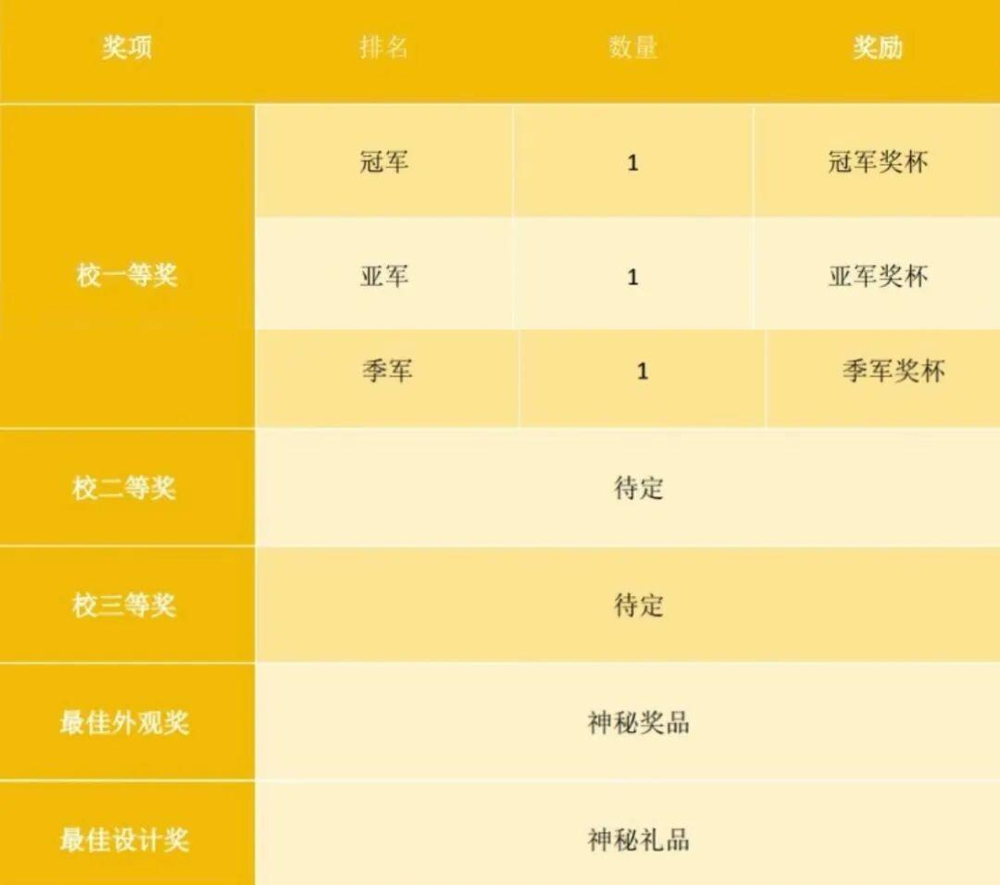
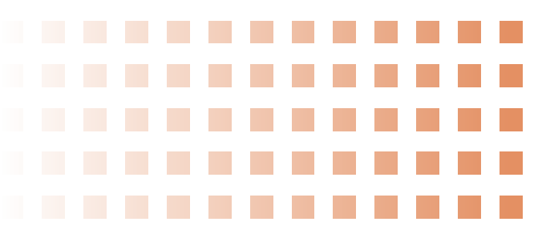

注意签收~机器人大赛规则空降~
第一届沈理机器人大赛
暨第十届MIM机器人大赛规则
赛事介绍

MIM机器人大赛
MINERALMASTER2024是为了鼓励我校热爱技术的学生，秉承将技术运用于实践、在实践中提升技术的理念，而创办的机器人对抗比赛。此次比赛分为趣味赛对抗赛（大一组）和竞技对抗赛（非大一组）。
奖项设置


大一组 赛前及比赛流程

赛前准备
在MIM趣味赛的正式比赛中，参赛队伍需要提前45分钟在“备场区”备赛，比赛前到达“检录区”进行检录，然后到“候场区”等候，最后进入“赛场”进行比赛流程。一场比赛结束后，参赛队伍离开“赛场”返回“备场区”。
比赛流程
比赛分为小组赛和淘汰赛两部分。小组赛中每场比赛会获得积分，而淘汰赛中则会对应地淘汰队伍。在每场比赛之前，上场参赛机器人必须通过赛前检录，以确保机器人满足规定的机器人技术规范。每场比赛开始前，参赛队伍须在裁判引导下进入赛场。每场比赛结束后，参赛队伍须按照规定的位置离场。小组赛中，双方队伍会进行两局比赛，每局比赛七分钟。每局比赛开始前进入30秒准备阶段，参赛队员需自行将机器人放至指定启动区，并启动机器人，30秒准备时间耗尽后（或30秒未耗尽但主裁判确认双方准备就绪），比赛立即开始。30秒准备时间最后5秒会有明确的倒计时音效提示，5秒倒计时结束后比赛立即开始。当比赛时间耗尽或经裁判团判定严重违规，一局比赛结束，双方换边。随后裁判确认双方队伍积分，比赛结果经双方参赛队队长签字确认后，进入下一局比赛的30秒钟准备阶段。比赛中裁判会对机器人或操作手的违规行为进行判罚。
注：比赛未结束，如果一方积分清零，则结束比赛，判定对方队伍获胜。若场内剩余弹丸为零，则以双方积分剩余多者判胜。若积分依旧相同，以车辆总重量少判胜。
非大一组 赛前及比赛流程

赛前准备
比赛开始前，各队有3分钟准备时间，将机器人置于各自的启动区，并进行必要的调整与设置，机器人可以加电，手动机器人不得运行出启动区。
比赛流程
比赛开始以比赛系统或现场裁判哨响为准，自动机器人从高地上启动区出发，可以将放置在障碍桩上的横杆推入槽内完成全部布障任务，也可以直接取矿石传递给手动机器人等，无自动机器人的队伍可使用高地区手动机器人完成上述任务；在比赛开始30秒后，以系统或现场裁判哨响为准，手动机器人可从其启动区驶出，进行清障任务和获取、放置矿石任务，高地区机器人不得进入非高地区，若进入则被罚下。
其他说明

其他说明
本规则是实施裁判工作的依据，在竞赛过程中裁判（评委）有最终裁定权。凡是规则中没有说明的事项由裁判组决定。
更多比赛相关资讯请扫描下方二维码进群查收
欢迎大家积极参与
预祝大家取得优异成绩

END
推文|文可可
审核|青唐三月